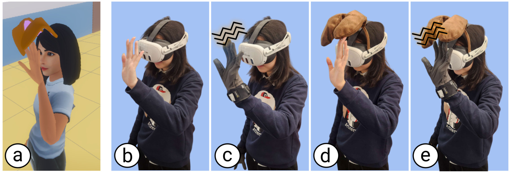

Abstract
Embodying non-human body parts in VR is a prevalent practice among certain subcultures and is a personally important creative outlet to many individuals. However, the discrepant morphology between real and virtual bodies can decrease Sense of Embodiment (SoE). Haptic feedback can compensate by increasing SoE felt towards non-human body parts, but there is a literature gap in comparing the effects of different haptic modalities, and their combinations, on SoE. Through an online survey sent out to social VR communities (n = 63), we determined that animal ears are a commonly embodied and ecologically valid non-human body part to study. We then ran a 2×2 within-subjects user study (n = 28) with two independent variables: active haptics, delivered through vibrotactile gloves, and passive haptics, delivered through a physical headband, for when participants reach up to touch virtual dog ears appended to their avatar in VR. Our findings show that (1) passive haptics produced the strongest overall embodiment outcomes, (2) combining modalities reduced the benefits of passive haptics, and (3) SoE towards non-human body parts positively correlates with SoE towards the entire avatar.